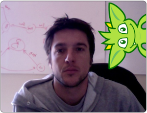
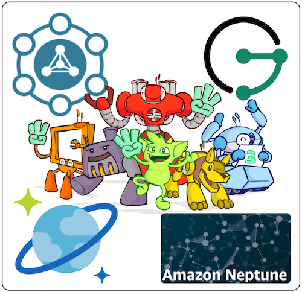
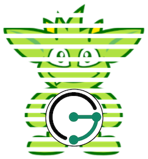
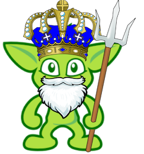
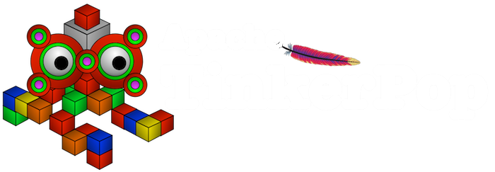

The Path to TinkerPop4
Marko A. Rodriguez (April 3, 2019)

Dr. Marko A. Rodriguez is currently leading the effort to bring TinkerPop4 to general availability and in order to do so in a focused and effective manner, he is seeking sponsorship from the major industry users of the technology.
Apache TinkerPop's next major release is TinkerPop4. The design process started at the end of 2017 and as of February 2019, components are currently being prototyped on the repository's tp4/-branch and discussed on the Gremlin-Users mailing list. TinkerPop4 incorporates the best ideas of TinkerPop3 and rectifies various shortcomings that have made themselves apparent over the last 4 years of industrial use. TinkerPop4 should appeal to the various project stakeholders by delivering a more compact Gremlin graph traversal language (graph users), an easier to reason about bytecode specification (language vendors), a simpler data and I/O interface (graph system vendors), and a universal execution engine (processor vendors).
{kind=link}
The TinkerPop project was founded in 2009. TinkerPop3 is arguably the most successful version of the project. Engineering on TinkerPop3 began in early 2015 and was driven primarily by Marko A. Rodriguez, Stephen Mallette, and Daniel Kuppitz (see master/-branch contributors). These individuals were employed by DataStax to focus on TinkerPop3 development and promotion. They were also responsible for coordinating with the engineers developing DataStax's TinkerPop-enabled graph database product, DSE Graph. From the onset of the project, DataStax repeatedly stressed the importance of Gremlin becoming an industry standard to help stabilize the nascent graph database market.
The first positive sign of adoption came early in TinkerPop3's GA release cycle when IBM announced JanusGraph and its exclusive support for TinkerPop3. A year later, Microsoft announced the use of Gremlin in CosmosDB. A few months after that, Amazon followed suit with the AWS-based Neptune graph database which supports both Gremlin (property graph) and SPARQL (RDF). Thus, as 2017 came to a close, DataStax, IBM, Microsoft, and Amazon were all leveraging TinkerPop3 in their respective graph products. This adoption by major technology firms solidified TinkerPop3's position in the graph community. While TinkerPop3 development slowly transitions to maintenance mode, Apache TinkerPop will not rest on its laurels and will continue to prove itself through theoretical innovation and subsequent high-quality software. TinkerPop4 plans to alleviate the current pains experienced by TinkerPop3 users and vendors while at the same time, advance the technology to new, unexpected levels of sophistication.
{kind=link}
TinkerPop4's design philosophy can be summed up with one word: "agnosticism."
- Language environment agnosticism: TinkerPop4 will not be confined to the Java virtual machine. The Apache TinkerPop team will engage the C#, Python, Go, and other language communities to develop TinkerPop4 virtual machines for use with their communities' respective graph, language, and processor products. Along with TinkerPop3's Gremlin language variants (e.g., Gremlin-Java, Gremlin-Groovy, Gremlin-Python, Gremlin.NET, Gremlin-JavaScript, etc.), TinkerPop4 will also maintain virtual machine variants. This complication will be greatly ameliorated if TinkerPop4's bytecode specification and virtual machine architecture remain simple, easy to engineer, and verifiable via a language agnostic test suite.
- Data language agnosticism: TinkerPop3's virtual machine and server are loosely coupled to the Gremlin language. TinkerPop4's virtual machine is only aware of a nested, array-based, primitive-valued, language-independent bytecode specification. As such, Gremlin4 is just one of many languages that can control the TinkerPop4 virtual machine. SPARQL, SQL, Cypher, and others will sit side-by-side and on equal footing with Gremlin.
- Data structure agnosticism: TinkerPop has always been available to any graph system vendor. This tradition will continue in TinkerPop4. However, discussions are currently underway regarding potentially supporting other database data structures such as tables/rows, documents, and RDF. If this occurs, then TinkerPop4 will be poised to become a universal distributed virtual machine for all data systems (not just graph). This direction is being carefully considered from a theoretical, technical, and cultural perspective.
- Data processor agnosticism: In TinkerPop3, there are two processing models:
standard(OLTP via Pipes) andcomputer(OLAP via Apache Spark and Apache Giraph). TinkerPop4 does not make an explicit distinction between real-time and batch analytical processing. As long as a data processor can transform the intermediate functional representation of the bytecode to a semantically-valid execution plan, then it can integrate with the TinkerPop4 virtual machine. The TinkerPop4java/source folder currently supports (due in large part to Apache Beam) TinkerPop Pipes, Google DataFlow, Apache Flink, Apache Spark, Apache Apex, and Apache Samza with an Akka and an RxJava prototype currently in development.
by Marko A. Rodriguez and Stephen Mallette. Stream Ring Theory by Marko A. Rodriguez.

As of April 2019, TinkerPop4 is in the prototyping stage of development (see the tp4/ repository branch). Marko (as RReduX) is looking to Amazon, Microsoft, IBM, and others to fund him as an independent full-time open source engineer working in collaboration with his Apache TinkerPop colleagues to bring TinkerPop4 to GA. If TinkerPop4 is going to outshine TinkerPop3, it will require Marko's full undivided attention.
IBM's JanusGraph is offered as a fully-managed IBM Compose cloud service and as a private enterprise graph database. JanusGraph is a fork of the Titan graph database developed by Aurelius (led by Marko A. Rodriguez and Matthias Bröcheler) and later acquired by DataStax in 2015. IBM is currently using TinkerPop3 in a number of products across their organization — from internal artificial intelligence projects to the aforementioned external cloud service. Two known IBM AI projects leverage SPARQL-Gremlin (developed by Apache TinkerPop committer Harsh Thakkar). The problem with TinkerPop3's SPARQL-Gremlin implementation, and other non-property graph query languages, is that the working data structure of these languages are mapped to property graph semantics. As such, SPARQL-Gremlin is not W3C-compliant because the underlying data structure is not RDF (i.e., property graphs are not founded on URI, literal, and blank node triple elements). TinkerPop4 is studying ways to support other data structures besides property graphs and if a breakthrough occurs, RDF would become a first-class citizen in TinkerPop4. Out of the box, every TinkerPop-enabled database vendor will be able to advertise W3C-compliant RDF/SPARQL support. Finally, for IBM's hosted graph offering, Gremlin Server will be significantly simplified. No longer will arbitrary JSR 223 scripts provide security risks nor will the results of distributed OLAP traversals be bottlenecked at the server. IBM's customers will be able to execute real-time, near-time, and batch-time traversals as TinkerPop4 will support a wide variety of data processors each optimized for different data access patterns — a necessary requirement for a product with an eclectic customer-base.
Microsoft's CosmosDB is a distributed multi-model database whose graph-model component supports Gremlin. For CosmosDB, one of the primary shortcomings of TinkerPop3 is its dependence on the JVM. TinkerPop4 will make it easy for other language communities to develop a TinkerPop4 virtual machine. Thus, Microsoft will no longer have to coordinate Java and .NET code as a .NET-based virtual machine will be available to all .NET-based vendors. Moreover, CosmosDB will no longer be dependent on Java-based processors such as Apache Spark. Any .NET processing engine (e.g., LINQ) will be able to comfortably integrate with the .NET TinkerPop4 virtual machine. Next, CosmosDB's rapid expansion in the database market is due in large part to its use of established languages and APIs. CosmosDB's document-model exposes the MongoDB API. CosmosDB's BigTable-model exposes the Cassandra API. CosmosDB's graph-model exposes the Gremlin language. Note that there is no standard property graph language. While Gremlin is widely adopted, Neo4j's Cypher language enjoys a large userbase and an extensive archive of top-quality documentation, tutorials, and online courses. If CosmosDB is confronted with a potential customer unwilling to migrate from Cypher to Gremlin, the Cypher-Gremlin compiler that compiles Cypher to TinkerPop bytecode can provide an inroad to the Cypher user community. Writing language-to-bytecode compilers will be significantly easier with TinkerPop4 and CosmosDB will gain access to more potential customers.
Amazon's Neptune graph database offering is available through AWS. Neptune customers can either use the property graph or RDF data model and respective query language (Gremlin or SPARQL). Though once the data model is chosen, it can not be changed. If Neptune is looking to unify the property graph and RDF aspects of the product, then TinkerPop4's data structure agnosticism effort will provide the SPARQL-support required of their RDF customers while enhancing their experience as their SPARQL queries will be able to run in real-time, near-time, or batch-time. TinkerPop4 provides an assortment of processors such as a real-time single-threaded single-machine processor (e.g., TinkerPop Pipes processor), a real-time multi-threaded single-machine processor (e.g., RxJava processor), a near-time distributed multi-machine processor (e.g., Apache Flink processor), and a batch-time distributed multi-machine processor (e.g., Apache Spark processor). With respect to multi-machine computing, note that Neptune currently does not partition its graph data structure across a cluster. If Neptune decides to support graph sharding, then with the forthcoming Akka processor, Neptune will immediately gain query routing, where traversers automatically migrate to the physical machine hosting their currently referenced vertex (i.e., data local processing). Thus, TinkerPop4 is positioned to provide Neptune all the processing engines necessary to efficiently evaluate their customers' variegated mix of Gremlin and SPARQL queries.
The best open source software is developed by individuals seeking to create technology outside the complications of organizational politics and commercial competition. Marko A. Rodriguez is one such individual who is currently working as an independent engineer on Apache TinkerPop4. If your organization benefits (economically) from his work (past, present, or future), then support his journey into the exciting, uncharted dimension of TinkerPop4 [contact].
